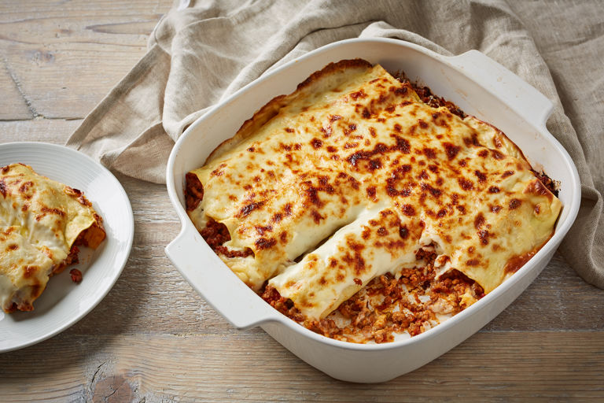

Cannelloni Recipe

Description
Fresh pasta stuffed with a rich ragù, topped with creamy béchamel and plenty of Parmesan and then baked until golden and bubbling.
Ingredients
- 1kg lean minced beef
- 1 tbsp olive oil
- 1 large oninon, finely chopped
- 4 garlic cloves, crushed
- 2 x 660g jars passata with basil
- large pinch caster sugar
- 400g driend cannelloni tubes
For the topping
- 50g butter
- 50g plain flour
- 600ml whole milk
- 140g soft cheese with garlic and herbs
- 140g parmesan,grated
Steps
- Dry-fry the beef in a non-stick pan on a medium-high heat - 10min
- Remove and set aside.
- Add the oil and cook the onion for 5 mins, until soft
- Add the garlic for 1 min more, then tip in the beef and 1½ jars of the passata sauce and the sugar
- Simmer for 20 mins while you make the white sauce
- Heat the butter in a small pan
- When foaming, stir in the flour for 1 min.
- Add the milk gradually, stirring all the time to achieve a lump-free sauce
- Remove from the heat and stir in the soft cheese with seasoning until dissolved
- Set aside, covered with cling film to stop a skin forming
- Pour the remaining tomato sauce into the base of 2-3 large baking dishes
- Spoon the beef into the cannelloni tubes using a teaspoon and lay on top of the sauce
- Pour on the white sauce, then sprinkle with Parmesan
- To eat straight away, heat oven to 200C/180C fan/gas 6
- Cook for 40-45 mins until the pasta is tender and topping golden.
Go to top!
Back to main page